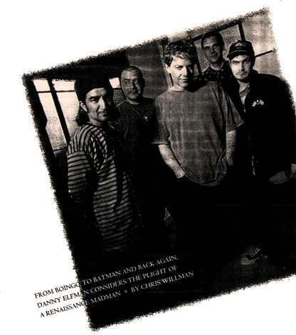
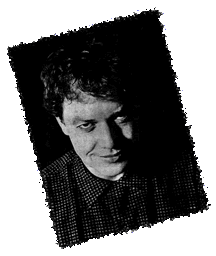
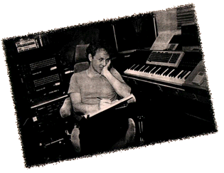

This interview if from a 1994 Grammy Magazine. The article was scanned by Laura Knauth, and typed in by Dan Crevier.

Danny Elfman is his own two-career family, residing in one body.
Since 1980, he's been recording albums as the wiry, wide-eyed frontman of Oingo Boingo, a seminal SoCal new wave group that started in the '70s as the avant-garde theatrical troup the Mystic Knights of the Oingo Boingo and has gradually streamlined its membership, its sound and its name, this year becoming officially nown as just Boingo. By any name, they've been a smash -- on one coast, anyway. Talk about your regional acts: In Los Angeles, they're a superstar-level act; the Boingo album debuted in late May on the Southern California sales charts at No. 3, compared with a No. 71 ranking nationally.
Outside of L.A., Elfman may well be more universally known for his more recently evolved career, as a determinedly non-pop, non-rock orchestral film composer. Heavily influenced by Bernard Herrmann and Nino Rota, Elfman got his first job writing for an orchestra when, on a lark, Tim Burton invited him to do the music for Pee-Wee's Big Adventure in 1985, a resounding success that led to such gigs as Beetlejuice and both Batman movies, among many others. An album of excerpted highlights from his scores was released last year, and though Elfman says that because of his rock background he has yet to really become respected in the ranks of the film scoring community, he's easily one of the most in-demand and commercially popular composers in Hollywood today.
Now he's working on a third, non-musically related career: as movie screenwriter-director-producer. Go ahead, as your therapist would say, feeeel the envy.
We caught up with the eternally pale renaissance madman at his art- and trinket-filled Malibu home in May as Boingo was about to be released and right before he left for England to oversee the recording sessions for Black Beauty. We wondered if he'd be feeling the slightest bit schizoid as he delved whole-heartedly into both careers for the first time in several years. We wondered right.
Grammy Magazine: I'd think that for a truly creative person, getting into film scoring could be very intoxicating, getting to do one project after another, compared with all the mundane things one has to do that are associated with maintaining a successful band, like plugging an album on tour for months on end. A return to the promotion game of rock and roll would seem less appealing after getting spoiled with the film stuff, I'd assume.
Danny Elfman: Well, I did feel that way. But I reached a point in the last couple of years where suddenly I started getting bored with film scores. There aren't a lot of films out there that are exciting to put music to, anyhow; that's the first thing. And I started pullin back the last couple of years. I've only been doing two scores at most a year. I could be doing five or six. I could be rich. It's very tempting. I'm at the peak of my career in terms of financially what I could be doing, and I'm not, and it's like this golden apple being held out in front of me. If I did five scores a year, like I should and could be doing, I could have my so-called nest egg all tucked away.
At the moment, I'm more excited about getting in the studio and recording with bass and drums and guitar than I am about film scores. So I've shifted over the last three years, form being kind of bored with the band and that side of things -- and you're right, I don't like to do extended tours, and I hate doing videos. Doing the same thing every night is monotonous. I've never been able to reconcile that, how a band goes on the road and does the same material every night. So we do short tours, and I reach the point after six weeks where I don't give a f---. I would never have made a good theater actor. I don't know how a theater actor goes up there and puts all this performance into the same words every night. I literally start to forget songs, and the songs that I forget the most readily are the ones I know the best, and it's usually a sign to me that I shouldn't be singing these things right now, it's boring.
And it was very peculiar when, over the course of this year, I found myself going, "I'm retiring as a film composer." I've been telling my agent that for two years: We're backing out now, we're backing off. I'm not enjoying this a lot. It's not that I'm not enjoying it, it's just that finding stuff to enjoy is getting harder and harder, and farther and farther between to get things that you can get excited about. And this is exciting to me. So now, it's like I've swung back to the other side, at least for this moment, in my enthusiasm. I'd rather be back in the studio [with Boingo] than on another big film score.
GM: You'll be doing a band tour, then, too?
DE: Yeah, we start touring in June. And I imagine how extensive or where we go depends on what happens with the record. Its reception will dictate how extensive our touring will be. But the band is a slightly different ensemble. It's trimmed down. It's going to be an interesting experience, because we are touring without the horn players for the first time, and another guitarist.
GM: On this album, ironically, you used horn players on "I Am the Walrus," a song that in its original incarnation had an orchestra, of course. It's the one place on the record where you really spotlight the horns, whereas you use strings much more on other songs. Was the use of strings just as simple as the fact that you've gotten so used to working with them on the film scoring side that it was inevitable you bring them over to your rock work?
DE: No, actually, I've always tried to keep them apart, which is why I didn't use them before. I wanted to keep these two sides of my life completely separate. But as I started getting into these songs, the songs themselves started to call out for these things, and I just couldn't find a compelling to not let them come together. Part of me was going, "No, no, keep 'em apart." It's liek two sides of your brain, and if you let them get together, maybe you'll have a meltdown or something? I was worried about matter and anti-matter getting together. [Laughs.]
And that's always how I felt about these two careers, that they appealed to such different sides of my personality, and when I'm doing one, I've always tended to hate and look down upon the other. When I'm with the band on the road, I think, "Ew, God, film composing, how do I ever do that?" I can't imagine how I do it, it takes so much work and discipline and concentration, and doesn't have any of that energy and sweat. And yet when I'm in the middle of a film score, it's like, "Oh God, being in a band is just so boring. This is really a much more creative field to be working in, and I never have to repeat things I don't want to. It's wonderful." So I've always turned my nose up at whichever one I'm not doing, and felt that I should have to keep them apart. And this time I just let it all mush together happily, and it was fun, I enjoyed it.
GM: In the same way that you've always avoided using an orchestra on Bonigo stuff before now, it seems like conversely you haven't wanted to use rock instrumentation for a film score.
DE: No, I've really avoided that side, mainly because I hate pop scores. Why would I want to do that? For me, the joy of film scoring has been working with an orchestra, even though I've done one synthesizer score [Wisdom], and I've done one -- Midnight Run -- which was what I would call a small contemporary ensemble score, more like a blues band than a rock band. I did those two experiments into non-orchestral scoring.
My feeling was, I want to work with an orchestra every time I can, every chance I get.... There's a lot of learning to do... I also have to say I've been reaching the point where it's starting to get boring to me, what I'm allowed to do with an orchestra. But I'm not bored at all with what I want to do with orchestras.
My next score, bu the way, will probably be a rock-based score. That'll be with Gus Van Sant. But that's not gonna be a "pop" score; I avoid it like the plague. I'm sure it'll be out there. It's a very twisted story. And whenever I have a story that's twisted like this.... not to mention a director who might be a bit twisted himself...
GM: As a newcomer to the scoring world who came from the rock world, and suddenly was hugely successful, did it take you a long time to gain the respect of your elders in the scoring world?
DE: Well, I never have won the respect of those elders. [Laughs.] I was hated, much-maligned, from day one, and still am today. I mean, the amount of back-biting and jealousy in the composing side of film is really intense. It is the most elitist field of the filmmaking process. It doesn't surprise anybody for an actor or editor or writer to become a directory. But the idea of somebody from rock and roll going to orchestral film composition -- as opposed to synthesizer composition -- is unheard of.
I made the error of speaking honestly in an early interview and saying that I was self-taught; that's considered impossible. I still have people out there to this day, lots of them, who claim that I don't write my own music, that I've got these teams of people who do it for me, and even people who claim they have proof! I mean, it just never ends. I went to Italy a couple years ago, and I met a composer at a party, and he said, "So, I hear you don't write any of your own music. Is it true?" I figure, well, after 10 years, what the hell, it doesn't matter.
And in fact, it's more from my own contemporaries in the industry than the older guys. Because actually Jerry Goldsmith and Henry Mancini have been very sweet to me. I think they're kind of in a different league, where they're probably more secure with themselves.
GM: I last interviewed you up here at the house about a decade ago. Boingo was well-established then, a veteran band, almost. But it's hard to believe you hadn't even started your film scoring career yet at that point, and, of course, it took off so quickly. Did you feel prepared for that whole line of work when you first went into it, or were you sort of learning on the job on your first movie or two?
DE: Oh, I could not have felt more unprepared. Basically, I got called into this meeting with Tim Burton and Paul Reubens, and I didn't know why they were calling me in for the meeting. The first thing I asked was, why me? And Tim used to come see the band, so he knew Oingo Boingo, and Paul was familiar with this thing I had done six years earlier for my brother called Forbidden Zone, a midnight cult movie.
They were exploring non-traditional composers for reasons I don't really understand, and we just kind of hit it off. I went home and made a little demo of an idea I had and sent it off to them and then for three weeks just forgot about it -- and got the call saying I was hired. Talk about a career turning point. That night I decided to blow it off, that I'd finally blustered my way into something I couldn't pull off, and I was probably going to wreck their film, and I decided to say no. And on a whim, I later though, "ah, f--- it, why not?" But it was really 50/50; it was kinda like the flip of a coin.
And I had to basically learn as I went. I had a good music editor and he helped walk me through what I though was the hardest part, which actually turned out to be a lot easier than I though, in terms of timings... Once I got the knack of that part of it, the rest came pretty easily. Relearning my self-notation was also difficult. Because I had scribbled notation for the Mistic Knights... I used to transcribe Duke Ellington piano solos and Django Reinhardt guitar parts and Stephane Grappelli violin solos for the Mystic Knights. So I'd taught myself notation that I hadn't used in years... The first couple weeks of it was complete hell. By the end of the project, I was hooked.
GM: Has it occurred to you that, of all the work you've done and probably ever will do, your most enduring legacy will likely be the "Simpsons" theme?
DE: That is the great irony, is that I've done, what, 20 scores now; let's say I do 20 more before I kick the bucket. And I've done some enormously successful scores, and I've done scores that have been imitated frequently, much to my amusement and annoyance. And yet the thing that will be on my gravestone when I die is "Danny Elfman: 1953 to 19..." Oh, let's say '98 -- let's give me four more years. It'll say "He wrote the Simpsons theme." Yeah, it's true, that thing I spent two days on will be what I'll probably be most known for, instead of those labors of love that I spent months just killing myself over -- a la Batman and others that I just thought when I finished those projects that I would never do another thing in my life, it's so much work. Of course the thing that I spent two days on would be most famous... Maybe there's a lesson to be learned there.
GM: You mentioned being frequently imitated. What would be the most emulated score, then, Batman?
DE: No, actually, weirdly enough, Pee-Wee and Beetlejuice were, more thna anything else, things that I would hear all over the place suddenly... [On Pee-Wee] I took a wild chance and did something which seemed outlandish and inapproprate. And I'm glad I did. I didn't look to other comedies and go what would be the safest way to approach this film? I just looked at it and had this idea and told them, "Look, if you want to take a chance, which you're crazy if you do, this is what I would do: I wouldn't even make it feel like an American film. I would make it feel like a European film made in the '60s." Because there's something about the Pee-Wee character that seems very un-contemporary. Comedies at that time basically were putting a combination of light orchestral and pop and rock music in their films.
And even though I had a very strong Nino Rota influence, all of a sudden that became a way to score comedies. It was startling toe; in my mind, I was gonna wreck somebody's movie with my music, and in the next decade I got to hear variations on that music in so many movies...

GM: Going back to the new Boingo album... It's obviously a departure or stretch in a lot of ways -- a stretch literally in that some of the songs are so long.
DE: Right.
GM: If you'd ask most people who have some awareness of what Boingo is about how they'd characterize the band, they'd probably think of really fast, hyper-tempo songs that bruise their way past you and get out of the way quick. These new songs are generally slower, more thoughful and more expansive than what people think of you doing. Was the change a matter of having been away form the band for so long, it was essential to do something that felt different to come back to?
DE: I reached a point toward the beginning of the '90s, and the late '80s, where I started drifting. And I probably was more into film scoring than the band at that point. I think I kept the band together more for the sake of the band than for myself. But it seems like there were a couple of points along the way where suddenly I would get really excited and launch off in a certain direction. I get bored really easy, and I don't always find what it is that it takes to get un-bored.
When we first started out, it was all about energy and fun and aggression. And then, in Dead Man's Party, we kind of took a complete shift. I really retired the band twice already. Because before Dead Man's Party came out, I said, "Well, we had our fun, we did what we did, it's time to let it go." So when I wrote the title song, I kinda went back and said, "Hey, listen to this, see what you think." And after a couple other of those tunes, the band got back together again, it was a new thing. And a lot of our old fans hated us, and we found a lot of new people. We just kind of let go of that earlier style, which some people never forgave us for. But I didn't care.
I'd get nasty letters saying, "Why don't you do this anymore?" I go, "Well, if I did, we wouldn't be together, so there'd be no band, so either way you lose, I guess." It's like we either shift or we just go away, which is the natural way that should happen with a band. It should always be reinventing itself or it should just cease to be -- otherwise, why? You're just repertory ensemble playing a favorites list. And I've always tried to keep a balance with the shows, because if you get a really crazy audience out there, they want to hear all the songs they know. I only want to hear my new stuff. So we've tried to find this balance, 50-50, I'll meet them halfway.
But I think after Dead Man's Party we started to drift again, and didn't really have an anchor; we were just kind of floating along. My great enemy was getting ahold of me, which is boredom. And I think after Dark at the End of the Tunnel, I was kinda like, "OK, that's enough now. We did it, we had more than you could ask for, we had a second life, and now it's time to lay it all to rest." And I got into all this other stuff -- writing scripts, did all these musicals, did 20-odd film scores.
And that's when I wrote the song "Insanity," just about a year and a half ago, and the same thing happened again. I went to Steve [Bartek] and played him "Insanity," and he said "That's interesting, do you have any more?" I started doing a few more things. And the band kind of again went through an algebraic thing and signed a new deal with Giant...
Once again, I felt excited about something, because we were improvising. We were coming up with stuff and going in the next day and laying down tracks and then making a song out of it. Five songs on the album were cut as demos; we weren't even trying to cut real tracks. And I liked that. It's nothing new for most bands, it's just not the way we functioned. I was always used to coming up with songs, bringing in demos, playing them for the band and then we would record them. And here I was coming up with [only] shreds of bits. So, I guess for the first time, we were functioning like a band.
So it was like a whole fresh experience for us. Whether anybody likes the album or not, I have no idea, but I had a really good time. This album caught us in a transition. In the beginning, it was almost like catching something at the point where you're shedding one skin and you don't know what the new skin looks like yet. I was already aware while we were doing it that again, for the second time in my career, I'm probably gonna piss of a lot of Boingo fans. I survived it before, and I can certainly survive it again, one way or another.
I guess I'm long past the point of being overly concerted with how my stuff is received. Because what do I have to prove, really? I don't really care. Not that I don't care -- everybody wants their stuff to be received -- but I don't need it to be. I want to go back in the studio again, I want to record another album like next month. I've already written five more pieces since I got out of the studio.

Once I get my engine going, it starts really going. This album isn't out yet for another two weeks, it's already starting to feel like an older album! I want to get in and do even a newer one before the first one comes out!
GM: With the songs being longer and in some cases more complicated in structure, did you have to consciously throw off preconceptions you might have had about the allowable formats of pop songs?
DE: No, we just basically went in there and started jamming out stuff. I had lyrics scribbled on all kinds of sheets of paper; I taped them all around my mike and would try to remember to go from the first verse on the first page to the chorus down here, the second verse on page 3 on this napkin over here... They wanted to be longer songs. Early on in the process, we knew that we either had to commit to making them formattable of go "F--- it, we'll deal with that later, we're not gonna deal with it now; we're gonna let the songs do whatever they want to do. Who knows if any of them are ever gonna get played on the radio, so why should we start cutting them for radio now?" We figured if we need to, there's always a razor blade in the fugure, and I would rather prostitiute myself down the line with a razor that to do it before the song is even finished.
I guess the most ridiculous experience on the album -- which is the most fun -- is "Change." We only had one really simple short song on the album, the only 3-minute song that I had written last year, and that was "Change" -- and that became, of course, an experiment in elasticity. We decided to take this one really simple thing and see how far it would stretch and give it no restrictions. Actually, it was even longer at one point; it was 22 minutes, and we cut it down to a lean, mean 16... If we hadn't run out of money and time, I would've ended up with a 30-minute version.
GM: So how tired are you?
DE: I'm having a rough time. This has been the longest stretch I've ever done without a break... I'm doing this big, lush, romantic score, and it's got me on the very last energy. My lifeforce is like finishing this score. And then it's like boom, just performing -- which is gonna be an enormous relief, because it takes no mental concentration at all, really, it's purely physical. And I'm looking forward to that in a huge way. Doing something that is strictly about sweat and physical endurance and involves no amount of intense focus or concentration, my brain can just float and turn into jelly for a while.
GM: What's the big, lush, romantic score?
DE: Black Beauty. It's my girlfriend's, Caroline Thompson's, first film. And of course I had to come out of my summer retirement to make my contribution. Which I'm really enjoying. My 9-year-old daughter and 15-year-old daughter both are heavy riding enthusiasts, and this film is gonna appeal to my young daughter enormously, so I like that I'm working on something that will be part of her horse legacy. I'm writing in a state of total exhaustion right now. Usually in any year period, I have a little buffer time to try to fill between stuff, but it hasn't happened this time around.
GM: You mean you don't normally feel overworked?
DE: Oh no, always. I'm used to being intensely overworked. I have three careers! And it's always a juggling act. But I've never felt as tired physically as I have this last month. It's convenient in a way, because people look at me and say, "Man, how are you feeling?" I say, "How do I look?" They go, "Oh, OK." So it's really good because you don't have to answer many questions. And I've got the coffin maker already measuring me, every now and then, going, "How tall are you? Just wondering, want to give you a proper fit." It's a crazy time.
Everything's always the opposite of what I intend it to be. Going into this, if you had asked me a year ago "What's this new album going to be like," I was gonna say, "Oh, real simple stuff -- guitar-bass-drum tunes, real straight-ahead, it's gonna be the simplest album I've ever done." I made the mistake of saying that to a couple people, and of course the curse is, it is the most dense and difficult and, in a way, complex piece of work I've ever done with the band. So that was my reward. I should've come out early and said, "Oh, God, this is gonna be so thick and dense and so complex, and there's gonna be so many things going on." And then I would've enced up with a pure folk album with solo guitar.
GM: You mentioned something about three careers. Pardon me if the obvious is eluding me, but beyond Boingo and film scoring, what's the third career?
DE: I actually in the last two years have probably put equal time into writing scripts. I have three screenplays that I've written or partially written, all in development at different places. One is for my directorial debut, should it all be lucky enough to fall together, which is at Zoetrope. The other two are musicals, and they're both very strange. Oddly enough, the one at Disney would certainly be one of the darkest musicals ever done, should it get made. So my hat's off to them for having the imagination to now start branching off into areas with certain people who seem to be occupying a certain off-center, twisted leaning that they feel fet into the Disney establishment, which I'm happy to be in. We got a lot of creative freedom with The Nightmare Before Christmans, and they seemed to say, "Sure, let's explore this, let's go with it."
GM: These musicals would be dark in the sense of being macabre, or downbeat?
DE: Uh, macabre. And downbeat. Well, they're both actually different. The one at Disney is very macabre. It's kind of inspired by Edward Gorey stories, and the Charles Addams cartoons -- not so much the movies, but the vibe of his original stuff.
GM: Can you say what it's about?
DE: [Chuckles.] Um, it's about three little murderers. It's not quite as grisly as you might imagine, but it's very dark. It's a little bit in the tradition of, I suppose, Arsenic and Old Lace in a certain sense, in terms of what's going on in the story is very morbid but done in a way that's fun to watch.
GM: Does it involve fantasy elements, or naturalistic?
DE: Oh, it's very naturalistic. The other (musical) is fantasy. I think that one is kind of my ode to Pinocchio meets Lord of the Flies. It has to do with growing up -- my personal view on growing up, anyway, which is that it's the most hideous time in our lives, and something which has to be survived, if we're lucky.
GM: So let me get this straight. Two of your three film projects are live-action musicals that you don't plan to direct. And the third one, which you do plan to direct, isn't a musical at all.
DE: Yeah. That one's a ghost story. Again, it's that desire of mine to kind of revive the ghost tale and certain types of horror and gothic tales and science-fiction stuff that I've loved over the years. It's so few and far between for a good, interesting, twisted tale or a scary tale or a horror tale that's nothing to do with a slasher oriented gorefest -- which is fun in itself, but that genre's gotten worked to death.
Plus the desire to start a production company with my girlfriend, and to develop screenplays and production for certain pet projects that the two of us both have -- "her" being Caroline Thompson. We both have this idea of creating somethign like a low-budget British production company, like they used to do in the '60s in England, picking stories that we like and developing them for production conceivably outside the traditional Hollywood venue.
GM: Do you move around in respective worlds of rock and film with equal or differing amounts of comfort and distress?
DE: Well, I don't move very fluidly in either one. I don't feel like I've ever been a part of the world of rock and roll. I've always felt that we were kind of an island unto ourselves outside of the rock and roll arena, and I think I'm actually more comfortable feeling that way. When I think of the rock world, I think of Rolling Stone, and I can't really see ever being part of that arena necessarily. I'd rather occupy our own little niche somewhere off in some corner.
And I think it's the same with film... I've very conciously looking to occupy little wings off in the corners tucked away where I can do certain stuff that not many other people are doing and that there's not an obvious market for. Rock and roll and film are the same that way. In both worlds, marketing tends to be able to market things that resemble something else. It's almost like a computer, and it gets this new product and the first thing it does is analyze it from top to bottom and find what does it most resemble and sell it as that. And if it doesn't quit resemble anything else, the machine kind of starts to shake and rumble and smoke.